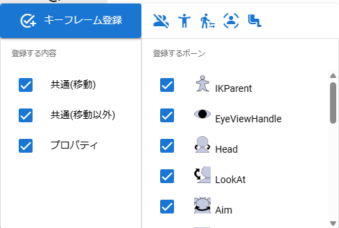

6.17. Keyframe registration window
Right-click (Control-click or double-tap for macOS) anywhere on the ribbon bar or press the Register Keyframe button on the Animation tab to display it. Here you can select properties and bones that you want to register in keyframes.
When you press the Register keyframe button in this, it is actually registered.
VRM |
Non-VRM |
|---|---|
 |
|

- Register keyframe:
Registers the state of the currently selected object to the current keyframe. If you register again at the same keyframe position, it will be overwritten.
- upper right toolbar:
-
They are listed from left to right in the following order:
- Deselect all bones:
Uncheck all bones.
- Select all bones:
Check all the bones checkboxes.
- Select the gaze:
Only check
EyeViewHandleandLookAt.- Select the upper body:
Check the following bones:
HeadChestAimLeftShoulderRightShoulderLeftLowerArmRightLowerArmLeftHandRightHand
- Select the lower body:
Check the following bones:
PelvisLeftLowerLegRightLowerLegLeftLegRightLegLeftToesRightToes
You cannot press Select upper body, Select lower body, or Select gaze related except for VRM.
- Contents to register:
Select the content to be registered in the keyframe from move, other than move, or property.
- Bone to register:
You can check the bones (IK markers) registered in the keyframe. This number differs between VRM and non-VRM.
Since VRM has each part of the body, it is possible to, for example, register only the movement of the Right Hand.
There is only one IK marker other than VRM, so there is no point in unchecking it and registering anything other than movement/movement.